This is the shared page every Claude session working on this project publishes newly-finalized work to — see the decision log below for the full reasoning before adding more. ← back to takes
Green border = done. Dashed = not finalized yet — add your beat here once it is, don't leave it only local.
docs/STORY-APLUS.md renumbering — not a redo of the Beat 4/Beat 5 cards above (different content; STORY-APLUS's beat 6 is the old "Beat 5, decision-makers"). Flat pre-rework visual system (VISUAL-STYLE/OVERLAY-RULES, not yet the gradient/3D-card language below) — uploaded as-is, pending a restyle pass. Full 14-frame review →
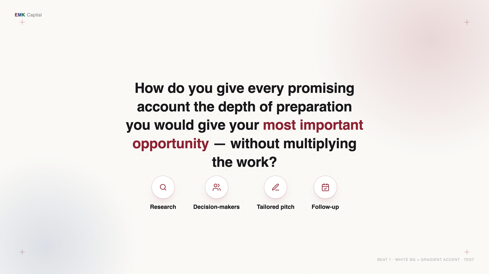
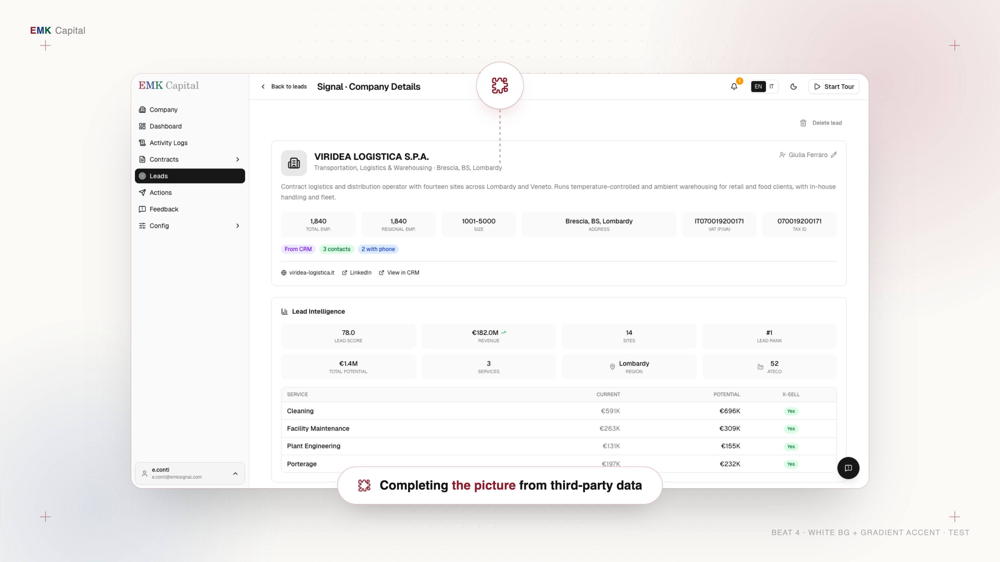
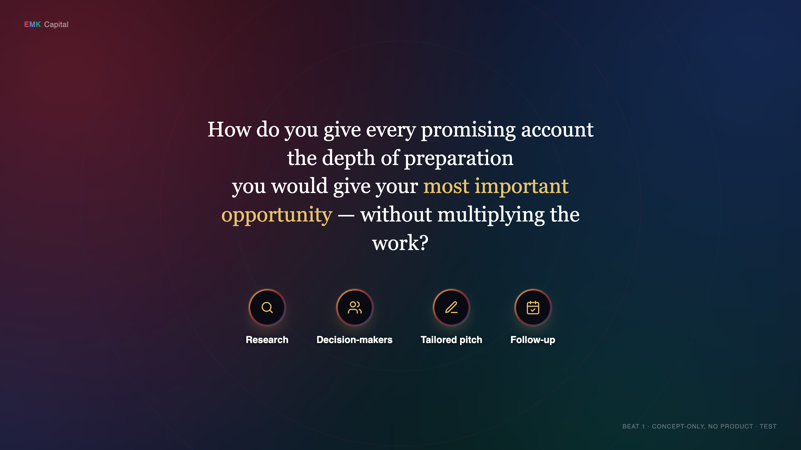
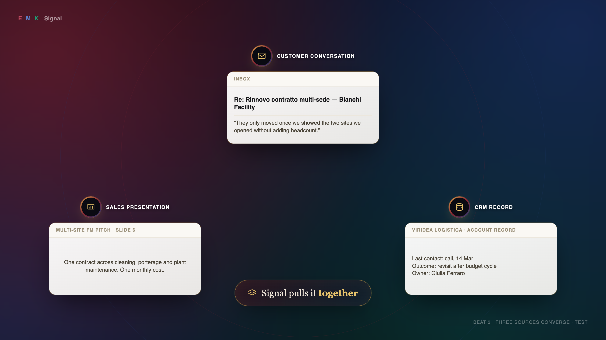
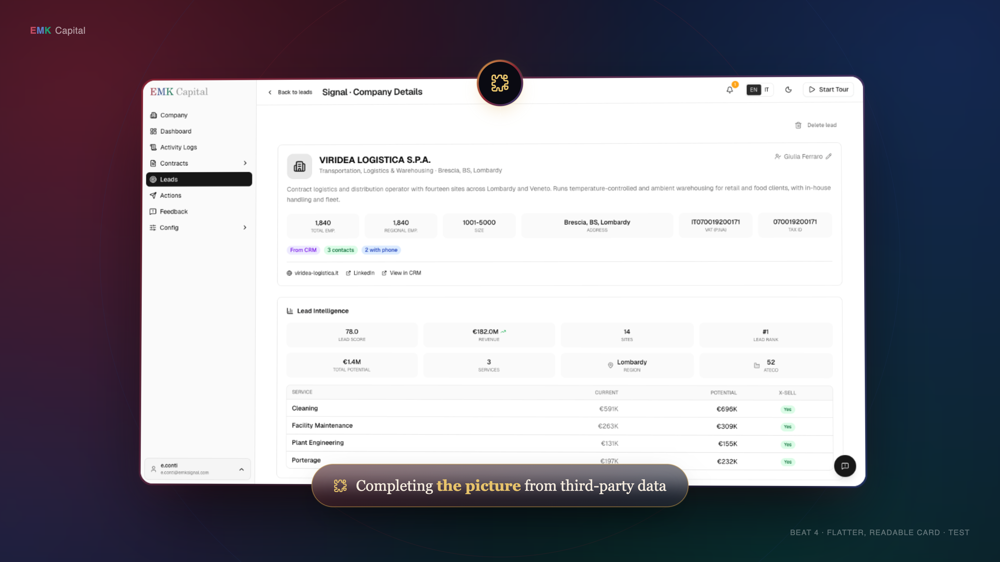
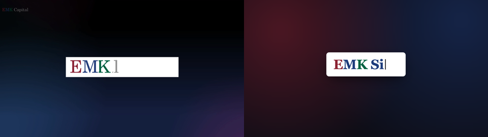
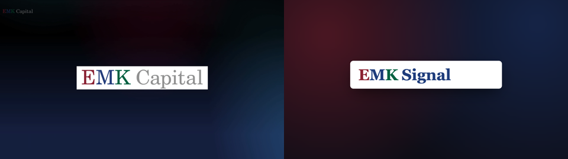
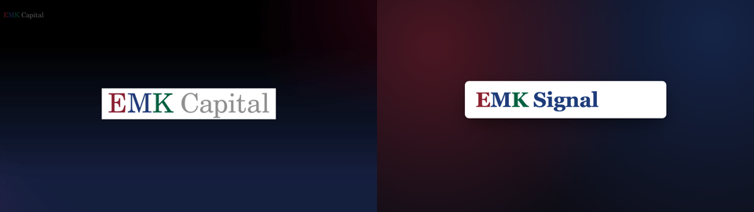
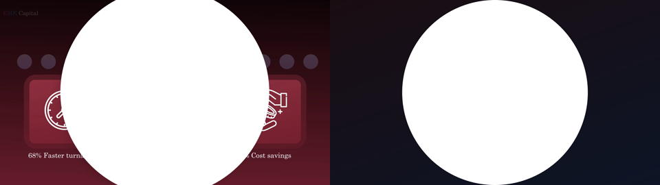
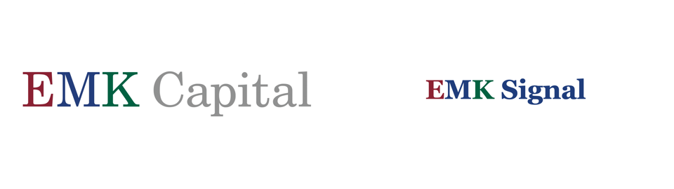
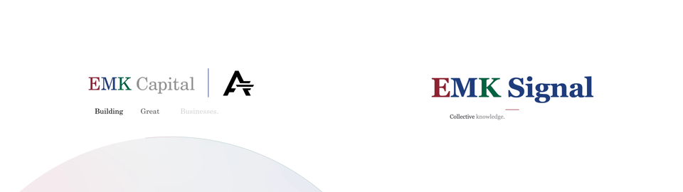
# VISUAL REWORK — creative pivot, 2026-09-26
This documents the reasoning and decisions behind the second creative pass on the AGM
video, triggered by real feedback on the first cut. It supersedes parts of
`docs/VISUAL-STYLE.md` (see "What this changes" below) — that file's rules were a
deliberate, reasoned choice at the time, not a mistake, so this doc says explicitly what
changes and why rather than silently overwriting it.
## Why this started
Feedback on the first narrated cut (voice note, paraphrased): *"the material's in there, it's
going to be refined a lot. The transition of each section is obviously messed up. It has to
be a bit more of a demo you'd see on a product site, as opposed to just this switch. It
looks a little dry, dull. We need to see how we jazz it up a little."* Plus: they want it
closer to **`refs/Ascend Video v3.mp4`** — EMK's own prior AGM video, referenced multiple
times, whose logo lockup we'd already partially copied.
Root cause (see `docs/VISUAL-STYLE.md`'s own rule: *"the product is the picture; the overlay
is the caption"*): the current build treats the real product at **full-bleed** as the entire
frame, and moves between beats by cutting/reloading that same full-bleed view. Ascend never
shows the product full-bleed — it's always a designed *scene* with the product as one asset
inside it. That's the actual, structural difference between "screen recording with effects"
and "product marketing video."
## What this changes from `docs/VISUAL-STYLE.md`
That file's "What is forbidden" list bans exactly the things this rework adds: drop shadows,
gradients, more than one accent, boxes with stroked borders, arrows with heads. Those bans
were a real decision (cites Monish and Sharad) reacting against over-decoration. This rework
supersedes those specific bans — gradients, colored shadows/glows, and a bordered card are
now the point, not a mistake to avoid — because the new feedback is from the room that
watches the finished cut, and it's asking for the opposite. Still keeping from the old
brief: one typeface family per register (see Typography below), safe margins, cue-word
timing discipline, no loading states ever on camera.
## References studied
### `refs/Ascend Video v3.mp4` (frames: `docs/ref-frames/ascend-*.png`)
EMK's own prior AGM video. Dark navy→maroon→purple mesh-gradient backdrop with a faint
rotating "orbit ring" arc motif. Product screenshots shown as **floating cards in 3D
perspective** (tilted like a laptop lid), soft red/blue chromatic edge-glow, heavy drop
shadow — never full-bleed. Circular icon badges with a **metallic gold ring**, connected to
what they annotate by a thin **dotted line**. Two callout forms: a glassy dark pill with a
green glow border for one-liners, a bordered box with icon-on-top + multi-line serif text
with inline color-highlighted phrases. Custom isometric vector illustrations for abstract
ideas (a person at a desk) — genuine illustration work, out of scope here (see "No
illustrations" below). Closing card: light background, soft gradient circle, co-branded
logo lockup with a vertical divider.
### `refs/L3 Communication Demo.mp4` (frames: `docs/ref-frames/l3-sheet.png`)
The other named reference, cited in the old brief as "the method." Product **full-bleed**,
plain white/light frame, no gradient, no card treatment, occasional big serif headline
slides with a small stat table. Minimal decoration — closer to what the *first* cut already
did. Useful as the "how not to lose the room" counterweight: this is what a demo looks like
with zero marketing polish.
### Firecrawl × Flowjam (`https://vimeo.com/1147842050`) — found via the user's own link
A current (9-months-old, so genuinely 2026-era), real, polished B2B product video. Studied
by scrubbing through it directly in-browser, not just reading about it. This is the most
useful reference of the three because it's an actual shipped product video in a
similar (technical B2B tool) category, not a pitch-deck-style piece like Ascend.
**Visual vocabulary:**
- **Alternates white and black full-frame backgrounds** between beats — "product moment" vs
"statement moment" get different backgrounds, not one consistent stage. Both carry the
same faint dotted world-map texture as a connective thread, so the palette swap doesn't
feel like two different videos.
- **Bold sans-serif type, ONE word in the accent color** (orange) — never a whole highlighted
phrase. Much more restrained than Ascend's serif-with-highlighted-clause approach, and
reads faster.
- **Tiny cross-mark ticks in the four corners** of the frame — a subtle "camera calibration"
framing device, present in almost every shot, barely noticeable but ties the whole thing
together as "one system."
- **Hero UI elements are isolated and blown up huge** — a single search bar, or a single chat
bubble, filling most of the frame — rather than a whole app screenshot shown small. The
product is shown precisely, one control at a time, not as a wide establishing shot.
- **A subtle ghosted wordmark** (very low opacity, logo + name) appears as a transitional
watermark shortly before the closing tagline resolves on top of it.
**Motion/transition technique (observed, not frame-measured — the Vimeo player didn't allow
frame-accurate scrubbing, so treat this as a qualitative read, confirm by eye against the
real file before building):**
- A **punch-in zoom onto one sub-element of the previous frame** is used as a transition, not
a hard cut — e.g. the search bar's own send button becomes the next shot's subject, scaling
up to fill the frame. The next moment is *contained inside* the previous one, not a new
unrelated shot. This is the "smart, precise, smooth" quality mentioned in feedback: the
camera moves to what matters next rather than jump-cutting to it.
- A **rack-focus / depth-of-field pull** is used at least once: a foreground element (the
chat bar) stays sharp while structured data/JSON scrolls **blurred** behind it, then focus
(or the crop) shifts to bring the background forward. Directs attention without a cut.
- Chapter-title (black-background) moments are reached by a **hard cut**, not a fade — the
white/black alternation is a deliberate palette swap on the beat, not a dissolve.
- Nothing in this video holds on a wide, undecorated full-app screenshot for long — every
product moment is a tight, isolated, precisely-framed single control or result.
**Action for the next build**: port the *technique*, not just the look — every zoom in the
next version should be a punch-in on a specific real sub-element (a button, a row, a field),
not a generic crop; consider a blur/rack-focus move for moments with two layers of
information (e.g. a real number behind a real label); keep cuts hard and confident rather
than soft dissolves.
### General 2026 SaaS/product-video convention (web research)
- Professional SaaS motion design is built in **three layers**: background gradient
(mesh/radial), midground UI cards (rounded rect + stroke — the "floating card" idea),
foreground floating accents (buttons, cursor).
- Universal easing rule: **`easeOut` on entrance, `easeIn` on exit, never linear.**
- Mesh gradients (drifting radial blobs) are the current default background treatment for
this genre — not just an Ascend quirk.
- Linear/Stripe/Notion's own launch videos are actually dense, dark-mode, minimal, closer to
the *L3* end of the spectrum — not gradient/floating-card heavy. That register suits a
technical-buyer audience. Ascend's polish suits an **investor/LP audience**, which is who
this video is actually for (per `VISUAL-STYLE.md`: "LPs and portfolio CEOs, first time
seeing Signal, a rehearsed room, recorded") — so Ascend's is the right register to lean
into here, even though it's not what Linear does.
## Decisions made so far
1. **Hybrid, mostly light.** Base register is the white/light background + soft gradient
accent + dotted-texture style (see sample frames, `docs/style-test/beat-*-light.png`),
confirmed as the preferred direction. The dark-gradient register (`docs/style-test/
beat-*.png`, no `-light` suffix) is kept in reserve specifically for **transition
moments between sections**, not as a competing full alternative — exact beats TBD
together.
2. **No custom illustrations.** Ascend's isometric character art is real illustration work,
out of scope. Lean on the icon-badge + floating-card system instead for anything that
would have wanted a character illustration.
3. **Card pop problem on light backgrounds, still open.** A white product card on a white/
off-white page reads flatter than the same card on a dark gradient — relies entirely on
the shadow to separate page from card, and gets harder once it's the *real* (also white)
product UI rather than a mockup. Recommendation: **keep the page light, but give the card
itself a thin colored gradient edge (maroon→navy) plus a color-tinted shadow**, rather
than a plain grey drop shadow or a fully dark mat — pop via color contrast, not value
contrast. This keeps the "mostly white" preference while solving the separation problem.
Open decision: does every product-card beat need this, or only some.
4. **Voice**: being handled separately (Shrey's clone, accent pass) — decoupled from this
visual rework; narration timing files are unaffected either way.
5. **Script is open to change.** Beat 7's granular email micro-edit ("in due casi" → "in due
siti recenti") is agreed to be low-value "walkthrough machinery" and a candidate to cut or
shrink once the visual pass is further along — not resolved yet, revisit together.
6. **A new storyline/update is coming** (not yet specified) that may mean editing the current
9-beat script or rebuilding a section from scratch — decide per-section once it arrives,
don't assume either way in advance.
## Confirmed fixes (not yet applied to the style-test mockups)
- **Top-left brand mark must read "EMK Capital", not "EMK Signal."** This matches the real
product's own sidebar (visible in the actual screenshots) and the old brief's own note
("EMK Capital wordmark parked small top-left of every frame"). The style-test mockups
currently say "EMK Signal" — wrong, needs fixing before this becomes real.
- **Extra/uneven spacing in the top-left brandmark** (the gap around "K"/before the second
word) needs tightening — a polish pass on `docs/style-test/shared.css` /
`shared-light.css`'s `.brandmark` rule.
## Update, 2026-09-26 — dark/light split resolved for beats 2/3/9; logo animations rebuilt
**Dark vs. light, decided (partially)**: non-product beats **2, 3, and 9 are the film's dark
chapters** (EMK-navy gradient treatment allowed/expected there); every beat that shows real
product stays light. Beat 2 specifically plays its dark treatment **over the glass-treated
product** (dimmed/blurred, still visible underneath), not on a fully separate blank page —
that's the one deliberate difference from Ascend's own opening, which is a totally separate
page. Which exact beats among the product-showing ones get any dark accent treatment is
still open (see below) — this only resolves 2/3/9.
**Logo animations rebuilt from the actual reference, frame-by-frame.** Feedback (direct
request, referencing Ascend "multiple times"): get beat 2's and beat 9's logo animations to
match Ascend's opening/closing lockups exactly, not just in the general spirit. Extracted
`refs/Ascend Video v3.mp4` at native 25fps around both moments (opening: video start through
~t=4.1s; closing: t≈67.5-69.3s) and reverse-engineered the actual mechanics — see
`assets/lockup-open.html` and `assets/lockup-close.html`'s own file headers for the full,
frame-cited timing breakdown, and `docs/LOCKUP-COMPARE.md` for side-by-side proof frames.
Headline findings, since they're genuinely different from what the current `record.ts`
overlay does:
- Ascend's **opening** types "EMK Capital" as ONE continuous phrase, no divider — the
divider only shows up in the closing (where it separates two different co-branded
entities). Ours reproduces this: "EMK Signal" typed as one phrase, no divider, since we
don't have a second entity to co-brand against either. First word slower (~170ms/letter),
rest faster (~80ms/letter) — a real, deliberate pacing choice in the source, not a bug.
- Ascend's opening has **no tagline at all** (the product name is introduced in a separate,
later beat we don't have room for) — so our tagline reveal mechanic is borrowed from
Ascend's **closing** sequence instead (thin rule + word-by-word reveal, not
character-by-character), applied to the opening because we need both in one beat.
- Ascend's **closing** transitions from its dark "stats" scene to the white lockup card via
a **circular iris wipe** expanding from a fixed point (their centre stat icon) — not a
fade, not a hard cut. The wordmark then appears **instantly**, fully formed, no
typewriter — a real, deliberate difference from the opening's typewriter build.
- Both assets expose `__in()`/`__out()` (matching the existing `assets/end-card.html`
convention) and are standalone/previewable, **not yet wired into `scripts/record.ts`** —
beat 2 and beat 9's actual choreography still call the old
`typewriter()`/`lockupExtend()`/`endcard()` overlay functions. Wiring them in is the next
step once these two are confirmed correct.
- One real mistake caught and fixed while building the compare doc: an early draft compared
Ascend and our frames at the same raw seconds-since-start, which made ours look
meaningfully faster than Ascend's when it wasn't — Ascend's own video has ~920ms of dead
air before its animation actually starts, ours doesn't (our `__in()` call *is* the start).
Once frames are compared by matching event (first letter appears, phrase completes) rather
than raw timestamp, the pacing matches well. Worth remembering for any future frame-vs-
frame comparison against this or other reference videos.
- One real scale bug caught and fixed: the closing wordmark was rendering at 88px, visibly
smaller than Ascend's equivalent; bumped to 128px and re-verified against the reference.
## Open questions
- Dark cards vs. light cards for beats that show real product screenshots, given the page
itself will mostly be light (see Decision 3 above) — my recommendation is a light card
with a colored gradient edge + tinted shadow, not a literal dark mat, but this is a
live discussion, not decided.
- Beats 2, 3, 9 are confirmed dark chapters now (see the 2026-09-26 update above). Whether
any *other*, product-showing beat also gets a dark-gradient accent (vs. staying fully
light throughout) is still open.
- Whether the beat-7 script trim (and any other low-value detail) happens before or after
the visual system is finalized.
- Scope of the incoming new storyline/update — unknown until it arrives.
## Where things live
- `docs/style-test/shared.css`, `shared-light.css` — the two competing design systems
(dark-gradient stage, light-gradient-accent stage), reusable across mockup frames.
- `docs/style-test/beat-{1,2,3,4}.html` — dark-gradient mockups of the real beat 1-4 content.
- `docs/style-test/beat-{1,4}-light.html` — light-background mockups of the same two beats,
for direct comparison.
- All of the above are **static HTML mockups only** — not wired into `scripts/record.ts` or
`scripts/scene.mts`. No change has been made to the real recording pipeline yet.
# LOCKUP-COMPARE — Ascend vs. ours, frame for frame Source frames extracted at native 25fps (0.04s/frame) directly from `refs/Ascend Video v3.mp4` — see `docs/ref-frames/ascend-open-fine/` (opening) and `docs/ref-frames/ascend-close/` (closing). Our frames are rendered from `assets/lockup-open.html` and `assets/lockup-close.html` via their `__in()`/`__out()` hooks, same viewport (1600×900). Full reasoning and measured timing tables are in each asset's own file header — this doc is the side-by-side visual check, plus an honest list of what still doesn't match. ## Opening (Beat 2) **Left: Ascend. Right: ours.** Ascend's own video has ~920ms of dead background+caret time before its first letter even appears (t=0 is the video's start, not the animation's); our `__in()` call is the animation's own start, equivalent to Ascend's t≈0.92 (first-letter moment). So Ascend frames below are shown at **(our timestamp + 0.68s)** — the offset that lines up "first letter appears" in both — not at the same raw seconds. Comparing raw seconds without that offset (an earlier pass of this doc did) makes ours look wrongly faster than Ascend when it isn't; noting the mistake here so it doesn't get repeated. ### ours t=0.80s / Ascend t≈1.48s — mid-phrase, second word just starting  Matches: "EMK" done, second word's first letter or two just appearing, box still widening. ### ours t=1.44s / Ascend t≈2.12s — phrase just completed, starting to hold  Matches once correctly aligned: both sides show the complete phrase, freshly landed. ### ours t=2.50s / Ascend t≈3.18s — full wordmark holding  Matches: static hold, correct colors (E maroon, M navy, K green), correct font weight/serif. ## Closing (Beat 9) **Left: Ascend. Right: ours.** ### t≈0.24s — mid-wipe (rendered as a deterministic intermediate state, not a live-transition sample — see note below)  Matches in concept and geometry: a white circle expanding from frame-centre over a dark background. Ascend's circle in its own frame is positioned slightly higher/left (their centre stat-icon's position, not true frame-centre) — ours is dead-centre since we have no stat icon to anchor to. Fine as a deliberate simplification (noted in the asset's header). ### t≈0.50s — wordmark appears instantly post-wipe  Matches the mechanic (instant appearance, no typewriter) and, after bumping our font-size from 88px to 128px to fix an initial scale mismatch, now matches proportion too. ### t≈1.30s — tagline mid-reveal  Matches: rule drawn, tagline appearing word-by-word rather than character-by-character. ## Known gaps to close before this is considered final 1. Neither asset has been wired into `scripts/record.ts` yet — these are standalone, verified against the reference, but beat 2 and beat 9's actual choreography still call the old `typewriter()`/`lockupExtend()`/`endcard()` overlay functions. That's the next step once these two are approved as correct. 2. The mid-wipe comparison frame (close-1) was captured by setting the wipe element's size directly rather than sampling the live CSS transition — headless Chromium's transition timing didn't line up with wall-clock sampling reliably enough to trust a "real" capture at that exact millisecond. The geometry is representative; the exact transition curve should be re-verified once this runs inside the real recorder (which has its own proven `at()`/`beat()` timing discipline, unlike this ad-hoc test harness).